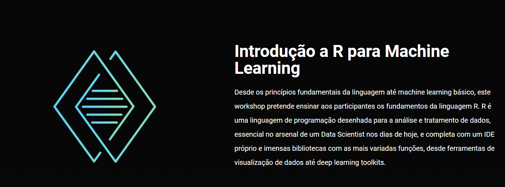

Events lectured, mentoring and advisory
ML in terpene synthases; an interactive workshop, by António José Preto and Shaurya Chanana, organised by ModBioTerp, March 13th, Amsterdam, Netherlands. Material at this GitHub link
Participation as alumni for career perspetives BEB day, May 15th.
Using Python to deploy Artificial Intelligence, by António José Preto and Daniel Ramalhão, organised by JEFAI, February 5th and 6th. Material at this GitHub link
Drug Design, Artificial Intelligence, Explainability and Deep Learning - How keywords become buzzwords and how they help shape the near future, by António José Preto, organised by Biodata.pt, January 4th

Machine learning - from statistics to artificial intelligence and back Hands-on session: machine learning in genomics and proteomics at PDBEB, February 3rd

Warm-up sessions for the upcoming MYD edition, 30th November.

Three PhD students talk about their distinct PhD research, event inserted in the 2022 Science and Technology Week organised by PubhD, 24th November.
UC Summer Internships - Application of Machine Learning Techniques for antiviral compounds' activity prediction, advised Paulo Correia, July 7th-September 7th
"Deep-Learning applied to IC50 prediction": Scientific Initiation Scholarship Project, advised Luís Moreira, 15th August - 28th September.
Machine learning - from statistics to artificial intelligence and back Hands-on session: machine learning in genomics and proteomics at PDBEB, March 1st
"Deep Learning applied to IC50 prediction": project successfully defended for the Bachelor's Degree in Biochemistry, advised Luís Moreira, 1st February - 12th July.
"GOBLIN: Graph-Oriented Binding Ligand Interaction Novel predictor": project successfully defended for the Bachelor's Degree in Biochemistry, advised Vasco Santos, 1st February - 12th July.
"Machine Learning in Predicting IC50 between Kinases and Ligands": project successfully defended for the Bachelor's Degree in Biochemistry, advised Miguel Leite, 1st February - 12th July.
"in silico perspective on psychedelic studies - characterization of the interaction between small molecules and 5-HT2AR": dissertation for the Master's Degree in Cell an Molecular Biology, mentored Guilherme Lopes Gabriel, who successfully attained his Master's Degree, 10th January - 15th July.
Computational Biology: Different computational biology fields, scientific research and funding, at "Áreas do Futuro", organised by NEBIOQ/AAC, December 13th

"Leveraging Machine Learning to design CPP for therapeutic cargo delivery": dissertation for the Master's Degree in Biomedical Research, mentored Francisco Duarte, who successfully attained his Master's Degree, 1st September 2021 - 13th October 2022.
Data-driven Molecular Design: Importance of data interpretation and pipeline interpretability on artificial intelligence targeting biological problems, at BOD, Braga, May 5th-8th

Lecturer on the topic: the basics of machine learning for computational biology using orange at PDBEB, February 23rd
Machine Learning Basics with Orange - at the Meet.Lab. Lecture title: "Dados (Multi)ómicos – da genómica, transcriptómica e proteómica, à mais recente metabolómica, epigenómica e farmacogenómica”, organised by NEB/AAC, October 10th
Summer School in Computational Biology. Online lecture: "Dados (Multi)ómicos – da genómica, transcriptómica e proteómica, à mais recente metabolómica, epigenómica e farmacogenómica”, September 10th
Doctoral Courses Courses 2019/2020 - Computational Biology PDBEB, February 24th
"Introduction to R for Machine Learning": conducted a workshop for the students (over 20) at the Physics Students National Meeting, 21st February

Invited debater for "AI integration in the future of Humanity", at the 3rd edition of MYD, organised by JEST, Coimbra, February 2nd
Lecturer of the six session workshop cycle "Python for Machine Learning", organised by Gomes & Canoso, Viseu, September 14th, October 19th, November 16th and December 14th

"Modeling Stargazin": dissertation for the Master's Degree in Biomedical Research, mentored Raquel Gouveia at the start of her Master's Thesis, 1st February-28th February
"Machine Learning with Python": Python basics and data science fundamentals. Developed a small project with the three students for Summer School in Computational Biology.
"Python programming for Biochemistry": Attending conference (IV Reunião Nacional de Bioquímicos) participants, 24th-25th February.
"Text Mining": Once a week mentor on text mining for biomarker discovery, mentored Ana Teresa Gaspar, who successfully defended her Bachelor's Project in Biochemistry, July 2019
"Text Mining": Once a week mentor on text mining for biomarker discovery for the student's Bachelor's Degree project, mentored Manuel Pires, July 2019
"Drug affinity": Once a week menntor on drug affinity prediction with machine learning techniques, mentored Xavier Pinho, who successfully defended his Bachelor's Project in Biochemistry, September 2018
"Machine Learning with R": R language basics and Rstudio environment. Developed a small project the three students for Summer School in Computational Biology, September 2017.
A Python workshop, by JEST. Python workshop with modules on introduction, visualization, data manipulation and machine learning, Coimbra, April, 17th, 19th, 24th and 29th
R workshop by JEST - Coimbra, November 28th, 29th, December 5th, 6th
Contact
If you wish to contact me please do it through martinsgomes.jose@gmail.com or any of the social networks displayed at the bottom of the navigation menu.